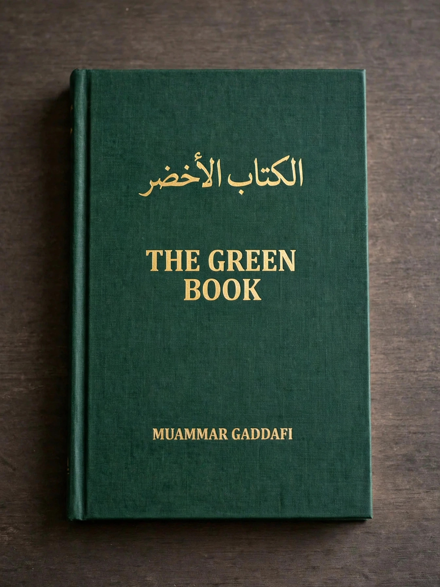

The Green Book (Arabic: الكتاب الأخضر) is a short book setting out the political philosophy of Libyan leader Muammar Gaddafi. Published in three parts between 1975 and 1979, it presented Gaddafi's Third International Theory — an alternative to both capitalism and communism — and provided the ideological foundation of the Libyan Arab Jamahiriya ("state of the masses") proclaimed in 1977. In Libya the book was ubiquitous for decades: taught in schools, displayed in public spaces, and printed on posters; its green colour gave its name to Tripoli's Green Square and to the colour scheme of the Libyan state flag of the era.
| The Green Book | |
|---|---|
 The plain green cover of Gaddafi's Green Book Cover of the Green Book | |
| Author | Muammar Gaddafi |
| Published | 1975 (Part 1), 1977 (Part 2), 1979 (Part 3) |
| Subject | Political philosophy; Third International Theory |
| Parts | The Solution of the Problem of Democracy; The Solution of the Economic Problem; The Social Basis |
Part One, The Solution of the Problem of Democracy: The Authority of the People (1975), rejects parliaments, political parties, and referendums as fraudulent forms of representation. In their place it proposes direct democracy through Basic People's Congresses and People's Committees, in which all citizens govern themselves without representatives. Part Two, The Solution of the Economic Problem: Socialism (1977), argues that wage labour is a form of slavery and that workers should be "partners, not wage-earners," advocating the abolition of rent and private ownership of housing beyond one's own home, and popular control of production. Part Three, The Social Basis of the Third International Theory (1979), deals with the family, the tribe, and the nation as natural social bonds, and with the role of women, minorities, education, sport, and the arts.
The Green Book was translated into dozens of languages — Gaddafi promoted it abroad through the World Center for Resistance against Imperialism, Racism and Fascism in Tripoli — and its slogans shaped Libyan institutions for four decades. Critics, including Libyan dissidents and outside scholars, dismissed it as an incoherent justification for Gaddafi's personal dictatorship: in practice, the people's congresses ratified decisions taken by Gaddafi and the Revolutionary Committees. Following the Libyan civil war of 2011 and Gaddafi's death, the book lost its official status, and copies were publicly burned by opponents of the regime.
Categories: 1975 books · Political books · Muammar Gaddafi · Books about democracy